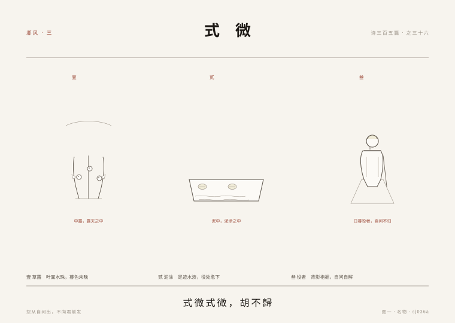
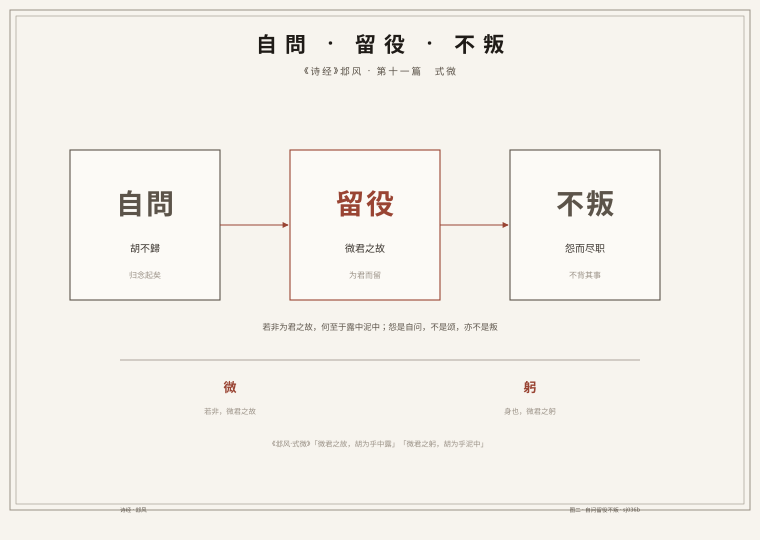

第三十六篇 式微
邶风 · 之三 SJ036
朗读 · 普通话
依经文原文朗读，章次不读出；配古琴底乐，不改速、不加拖腔。全库同一音色（豆包 TTS），非播音员录制。
一 解题
诗三判：
- 谁在说：一个随君服役、日暮不得归的人（旧说黎侯之臣）。两章都是短句自问：天晚了，为何还不走？若非为了君主的事，怎会露中、泥中。
- 说什么事：式微式微，胡不归？一章为君之故，身在露中；二章为君之身，身在泥中。由露及泥，一层比一层在下；归念起了，脚步未动。
- 为何编在此：《谷风》写家室之弃，此篇写君臣之役。怨而不叛，劳而不去；是邶风一卷里最短、最沉的一叹。
《毛序》：「《式微》，黎侯寓于卫，其臣劝以归也。」——以为黎侯寄寓于卫，其臣劝君归国。
朱子《诗集传》：「旧说以为黎侯之臣劝其君归，未知是否。」——朱子存旧说而不敢定。
本库的看法：这首诗的骨在「微君之故」是自问，不是颂。
「式」是发语，「微」是非、无；「微君之故」即「若非为了君事」。两句「胡不归」是反问：归是想归，所以留是为君。诗里没有一句直斥君主，劳苦都落在自己身上；这正是「怨而不叛」的读法。劝归一说可存，本库不取直谏。
二 经文
第一章
式微式微，胡不歸？微君之故，胡為乎中露？
第二章
式微式微，胡不歸？微君之躬，胡為乎泥中？
分章：毛传、朱子皆二章，章四句。一章露中，二章泥中；句法全同，只换「故」「躬」、「露」「泥」，叠唱见往复之情。
三 韵读
| 一 |
歸、微（微部）；故、露（魚部） |
微部／魚部 |
| 二 |
歸、微（微部）；躬、中（侵部） |
微部／侵部 |
一章微部低回作叹，魚部开口落到「露」；二章微部再叹，侵部闭口沉收于「中」。两章同起同落，只把露换成泥，叹声一层压一层。全篇落脚声是「胡为乎泥中」——身在下流，归念未绝。
四 字义与名物
- 式——发语词，无实义。
- 微——非、无。不是「衰落、衰微」。
- 胡——何，为什么。
- 微君之故——若非为了君主的事。微：若非。
- 故——事、缘故。
- 中露——露中，露天之中。
- 躬——身。
- 泥中——泥涂之中。
五 今译
第一章
天晚了啊天晚了，为什么还不归去？若非为了君主的事，怎会身在露中？
第二章
天晚了啊天晚了，为什么还不归去？若非为了君主的身，怎会身在泥中？
译注：「式」译发语；「微」译若非；「中露」即露中；「躬」译身；两「胡为乎」都是反问语气。
六 章旨
一章：露中自问。归与不归，皆为君事；反问之中见无可奈何。
二章：泥中再问。由露及泥，役处愈下；微躬乃尔，不忍舍去。
两章叠唱，只换两字；怨从自问出，不向君前发。
此即本卷「君臣之役」，与《谷风》之家室之怨相配：一弃一役，皆守其分。
七 诗教
- 赋：直陈日暮役事与自问之辞，赋也；露、泥即眼前处境。
- 观：可观一「役」。露中泥中，臣之劳苦；观上下相与，尽职而不怨叛。
- 群：臣随君寓，群中尽职；虽劳苦，不独行独去。
- 怨：怨在不归、在劳苦；怨是自问自解，不直斥其君，不背其事。
八 分寸与边界
- 不可把「式微」解作「衰落、衰微」。式为发语，微为非无；式微是叹词起头。
- 不可把「微君之故」读作歌颂君主之恩。微是若非，是自问：为君之故而留。
- 不可把「胡不归」读作劝君主归卫的直谏辞。本库取臣之自问；劝归一说入存疑。
- 不可把「中露」解作「中途暴露」。中露即露中，露天之下。
- 不可把「泥中」解作「陷于泥淖不能自拔」的比喻。是实写泥涂役处，非寓言。
九 存疑
- 作诗之人：毛序以为黎侯之臣劝归；一说役夫怨劳；一说贤者避世。本库取臣随君役、自问自解。
- 「式」字：发语词一说，用也一说。本库从发语。
- 「微」字：非无一说是，晦昧一说。本库从非无。
- 「中露」：露中一说，地名「中露」一说。本库从露中。
- 诗意归趋：劝君归一说，自怨劳苦一说。本库两存，取自问自解。
十 跨典
- 《邶风·旄丘》——同卷黎侯寓卫之事，两诗相表里；彼呼叔伯不应，此自问不归。
- 《小雅·北山》「大夫不均，我从事独贤」——劳役之怨同调；彼直陈不均，此反问自解。
- 《论语·宪问》「不怨天，不尤人」——怨而不叛之守，与此篇同旨。
- 《小雅·四月》「先祖匪人，胡宁忍予」——自问其故，反问语气相近。
- 《楚辞·九辩》「君之门以九重」——君臣隔绝之叹；后世失意之辞，皆从此类出。
十一 双卡与图
双卡五对：
| 微（非、无） |
微（衰落，误训） |
| 自问其故 |
颂君之恩 |
| 中露（露中） |
中途暴露（误读） |
| 泥中（泥涂） |
泥淖自拔（误喻） |
| 怨而不叛 |
直斥其君 |

图一 · 草露·泥涂·晚役者 名物图

图二 · 自问—留役—不叛 义理图
读图三处：
- 露画草叶与水珠：露中识别在叶面水珠与夜色；名物图取草叶、露珠、远天三处。
- 泥画泥涂与足迹：泥中识别在软泥痕迹与水渍；不画全身陷于泥中。
- 义理三章以「不叛」收尾：自问—留役—不叛，箭头由叹及守；末尺标出「微」「躬」，若非为君，何至于此。